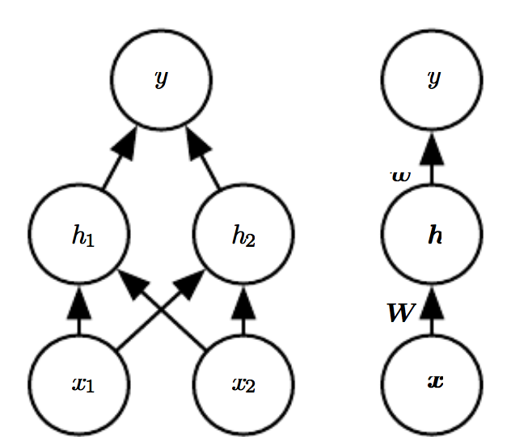
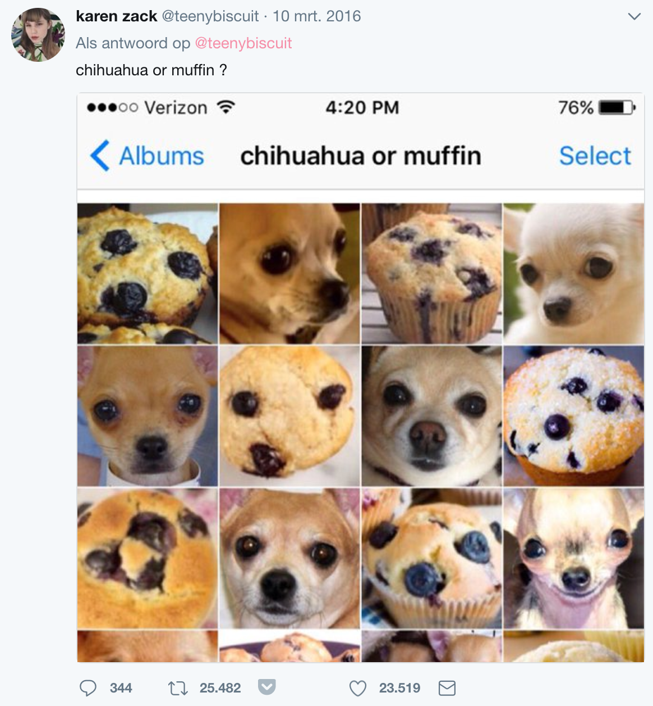

Handcrafting Recurrent Neural Networks to count
Recurrent neural networks (RNNs) handle complex problems like convert speech to text like a pro. This blog shows the basics of RNNs by teaching a RNN to count.
RNNs are well suited for problems with sequences like captioning images and converting speech to text. The former generates an sequence of words from an image, the latter translate a stream of audio into words.
State of the art RNNs can choose to remember or forget a part of a sequence, and can learn to which part to attend to. Some fantastic blogs on this topic are The Unreasonable Effectiveness of Recurrent Neural Networks , Understanding LSTM Networks and Attention and Augmented Recurrent Neural Networks.
I wrote this blog while trying to reproduce some of the results of Exploring LSTMs. Let's first go back to the basics!
1. The basics
Consider the situation where we start of with \(\mathbf{x}\), some image data, and \(\mathbf{y}\), labels indicating if the image does or does not contain a dog. Our neural network should do some magical operations to find all the dogs in the images.
Feedforward nets
The most basic neural network is a feedforward network, shown in the figure below. On the left, a network with one layer with two hidden units. On the right, a compact notation of the left image representing a network with an arbitrary number of hidden units.

This network adds constant values to the input \(\mathbf{x}\), weights the result and passes this through some function \(f\). This gives use the activations \(\mathbf{h}\) in the hidden layer:
To get our predictions \(\hat{\mathbf{y}}\) we'll do the same with \(\mathbf{h}\):
Learning is the process of optimizing the parameters \(\mathbf{W}\), \(\mathbf{b}\), \(\mathbf{w}\) and \(\mathbf{c}\) so that we get correct predictions.
Before learning, the network starts with some random values for its parameters. The data \(\mathbf{X}\) is fed forward through our functions, resulting in predictions. The predictions are compared to the ground truth and the error is backpropagated through the network so we can find better values for our values. Doing this many times will (hopefully) teach the network to recognize dogs.
Deep Learning is the process of finding the architecture of the network (e.g. how many hidden layers & units to use) and teaching it to learn. This process often involves waiting, throwing a lot of money on GPU's and burning out PhD students. Deep Learning is not for the faint of heart.
The network in the figure above does not really deal well with sequences. Let's say you get one of these ambiguous images:

If you just saw a picture of a tiny dog house, you're probably more likely to think that the weird object in the picture is a chihuahua and not a muffin. This makes sense: context matters.
Our network learns its parameters once and has a fixed state, so it cannot take context into account. It's opinion doesn't change depending on what it just saw. We'll have to find a network architecture that can remember.
Recurrent neural nets
A recurrent neural network updates an internal state based on what it has seen so far. A diagram is shown below.

\(\mathbf{x}\) is now a sequence of data for multiple time steps \(t\). A sequence can consist, for exampe, of images, words or phrases uttered. At any given time \(t\), we construct an idea \(\mathbf{h}^{(t)}\) from \(\mathbf{x}^{(t)}\), our new input, and \(\mathbf{h}^{(t-1)}\), our ideas so far. For the formula-minded audience:
(All the parameters for this layer are put in \(\boldsymbol{\theta}\).)
This specific architecture waits for the whole sequence to end, but there are also forms that generate output for each time step. Similarly in real life, we can wait for someone to finish her sentence before translating it or try to translate someone on the fly. We'll learn a neural network to count with the former approach.
2. The counting problem
This counting problem will show that a RNN is able to keep a state.
Our RNN will see a sequence of a's and has to output the same number of b's.
Counting for this tasks means keeping track of how many a's it has seen and the b's outputted so far.
The data looks like this:
['axb',
'aaxbb',
'aaaxbbb',
'aaaaxbbbb',
'aaaaaxbbbbb',
'aaaaaaxbbbbbb',
'aaaaaaaxbbbbbbb',
'aaaaaaaaxbbbbbbbb',
'aaaaaaaaaxbbbbbbbbb',
'aaaaaaaaaaxbbbbbbbbbb',
'aaaaaaaaaaaxbbbbbbbbbbb',
'aaaaaaaaaaaaxbbbbbbbbbbbb',
'aaaaaaaaaaaaaxbbbbbbbbbbbbb',
'aaaaaaaaaaaaaaxbbbbbbbbbbbbbb']
Here we have:
aaa: the sequence to count;x: a switch character telling that the sequence has ended and prediction should start;bbb: the sequence to output.
We'll add another special character: s.
s signals that the sequence has ended and is also used for padding so that all our sequences are of the same length.
3. Preprocessing
We'll generate all possible combinations of sentences and the next character to be predicted by moving through the text.
The network is asked to predict b's after x, for example:
Text: aaxbb
Sentences: ['aax', 'aaxb', 'aaxbb']
Next char: ['b', 'b', 's']
We'll have to vectorize the text into numerical features so that keras can use it.
Element of X:
a b x s
0 True False False False
1 True False False False
2 False False True False
3 False True False False
4 False False False False
...
26 False False False False
27 False False False False
28 False False False False
29 False False False False
30 False False False False
Element of y:
True
In this example, the columns correspond with a, b, x or s and the rows are the characters of the sequence (note that we're missing padding in this example).
Our X consists of matrices stacked like this.
An element of y is a single boolean value indicating if a b should be predicted.
4. The network
What kind of architecture should our model have?
We'll feed in X and want to predict for a single class (b or not b).
The last layer should thus be a single node dense layer with sigmoid activation, but how is the network going to count?
As this is a fairly simple task, a plain old RNN should be good enough:

Our RNN should keep track of the number a's seen and b's outputted so far and decide whether to output another b.
Handcrafting
We can let the model learn, but we can also handcraft the neural network ourself!
Our RNN should increment a counter for every a it has seen and increase a different counter for every b it has predicted.
A b should only be predicted if the count for observed a's is higher than for predicted b's.
The RNN should thus consist of two units with a linear activation function. The update equations for our neural network are:
We can create this network in keras with:
n_remember_units = 2
sequence_input = layers.Input(X.shape[1:])
x = layers.SimpleRNN(n_remember_units, activation='linear',
name='rnn')(sequence_input)
x = layers.Dense(1, activation='sigmoid', name='dense')(x)
counting_model = models.Model(sequence_input, x)
Each unit focusses on one character: \(\mathbf{U}_{RNN}\) is only non-zero if an a or b is seen for its unit.
The units should only look at its own previous states, so \(\mathbf{W}_{RNN}\) is a diagonal matrix with ones.
Choosing a value of one for these matrices will add the input (if it's b or not) to the number of b's seen.
The dense layer substracts the input of the b unit from the a unit, and converts it to a probability.
We'll weigh the counts coming from the RNNs with +0.5 for a and -0.5 for b.
The probability will be higher than 0.5 if n_a > n_b.
All biases are zero.
(Question for the reader: why do we need \(> 0.5\) and not \(\geq 0.5\)?).
weights = [
np.array([[1, 0],
[0, 1],
[0, 0],
[0, 0]
]), # U_RNN
np.array([[1, 0],
[0, 1]]), # W_RNN
np.array([0, 0]), # b_RNN
np.array([[0.5], [-0.5]]), # W_dense
np.array([0]) # b_dense
]
counting_model.set_weights(weights) # No .compile() and .fit() needed!
Will this really work?
from sklearn.metrics import classification_report
y_pred = counting_model.predict(X) > 0.5
print(classification_report(y_pred, y))
precision recall f1-score support
False 1.00 1.00 1.00 196
True 1.00 1.00 1.00 105
avg / total 1.00 1.00 1.00 301
Yes, it works!
Let's investigate what's happening inside the RNN. To see what the the RNN is doing, we can discard the last classification layer and look into the RNN layer. Create a new model without the dense layer and tell the RNN layer to return the full sequences instead of only the last hidden state:
sequence_input = layers.Input(X.shape[1:])
x = layers.SimpleRNN(n_remember_units, return_sequences=True,
weights=counting_model.layers[1].get_weights())(sequence_input)
hidden_model = models.Model(sequence_input, x)
Calling hidden_model.predict(X) will give use the full sequence.
Let's look at what the hidden states are for a full sequence:

The hidden state of cell 0 slowly increases as it sees more a's.
If no a's are present, the weighted average of the hidden state and the input (0) slowly decreases its value.
The same happens for cell 1 that's looking at b's.
The output of cell 1 is substracted from the output of cell 0 and comparing it to 0.5 indicates if another b should be outputted.
This allows our RNN to perfectly solve this problem!
4. Conclusion
We solved the problem, but did our RNN learn how to count? Not really: our RNN perfectly solves the problem but does not understand the concept of counting. The RNN can hold states and can compare them but it did not solve the underlying problem. Nevertheless, this blog (hopefully) demonstrated that RNNs can hold state and this can be used for far more complex problems!